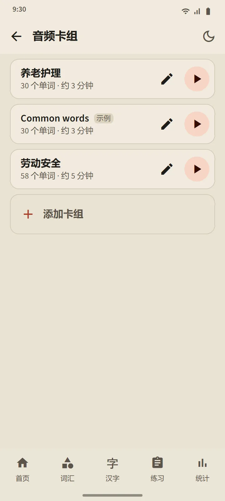

自己建立的音频卡组
建立一个包含 5 到 100 个单词的卡组：可以逐个搜索，也可以从任一词汇卡组中批量添加。播放器先用日语朗读每个单词，再用应用语言朗读它的词义（关闭“朗读词义”则只读日语）。当前单词会连同振假名大字显示；点按列表中的单词即可跳转到它。
控制功能：随机播放、重复，以及 0.75×、1× 或 1.25× 的语速。屏幕熄灭或切换到其他应用时，播放器仍会继续播放；播放器通知和耳机按键依然可以控制播放。
- 免费版：3 个卡组。Premium：不限数量，并且一个卡组可以下载为一个音频文件（M4A）。
- 系统会根据最常用的单词自动创建一个示例卡组“Common words”；你可以随意编辑或删除。
- 听音频不会改变单词的复习安排或阶段。


口语练习：说出来，然后继续
你已“记住”或“掌握”的单词会出现在卡片上；麦克风会自动开启，你说出这个单词，如果手机识别出来，就会出现下一个。如果没有识别出来，屏幕会显示它听到的内容并再次聆听；三次尝试后会播放示范发音。麦克风按钮、示范按钮和“跳过”始终都在。每次练习有 5、10、15 或 20 个单词。
你的声音由手机的语音识别服务（通常是 Google 的）处理；应用不会录制或保存。只判断单词，不判断你的口音。由于语音识别可能听错，这项练习绝不会降低单词的阶段。

书写汉字：一笔一画
适用于你已“记住”或“掌握”的汉字。页面只显示释义和读音；你在一个占满宽度的书写框中书写，每一笔在手指抬起时都会被检查：形状、方向和顺序。正确的笔画会吸附为标准形状；顺序错误或方向颠倒的笔画会被拒绝，并用一句话说明；错过两次后，下一笔会连同起点淡淡地显示出来。
- 凭记忆：空白的书写框。带描影：汉字淡淡地显示出来，用于热身。按顺序点击：完整显示汉字；按顺序点击它的笔画。
- 动画按钮可以随时播放整个汉字的书写过程。
- 在两个不同的日子都不借助提示、凭记忆写出某个汉字后，它就算已会写；每次练习 5、10 或 15 个汉字。


处处都有发音
词汇卡片、汉字卡片、单词详情、假名课程、语法例句和听力题，都由手机的日语文字转语音引擎朗读，因此无需下载任何音频文件。音质取决于各手机自带的引擎。